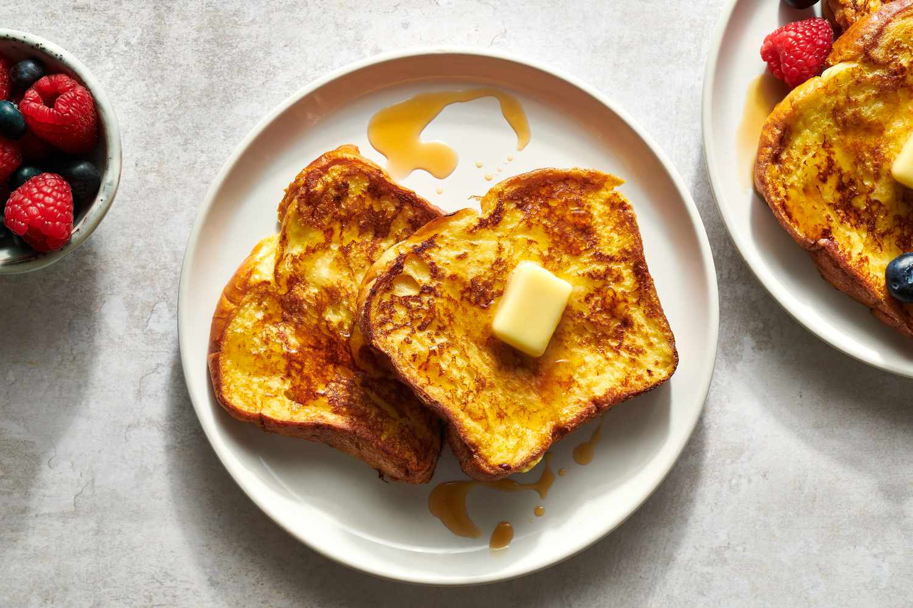

How to make Toast by Alex Nguyen

Ingredients
- Toast
- Butter
- Maple Syrup
- Pan
How to make toast
- Spread butter on both sides of the piece of toast
- Put toast on preheated oven and wait till golden brown on the underside
- Flip the piece of toast when golden brown
- Once complete, top off with maple syrup and butter for added flavor
- Enjoy your toast!